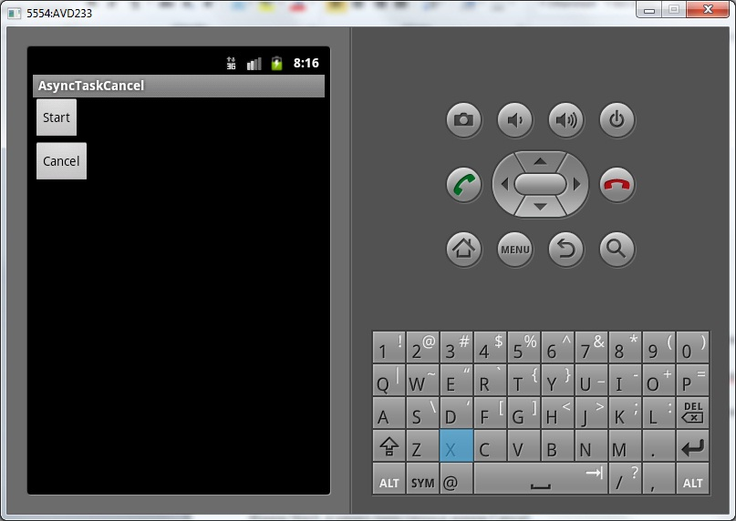
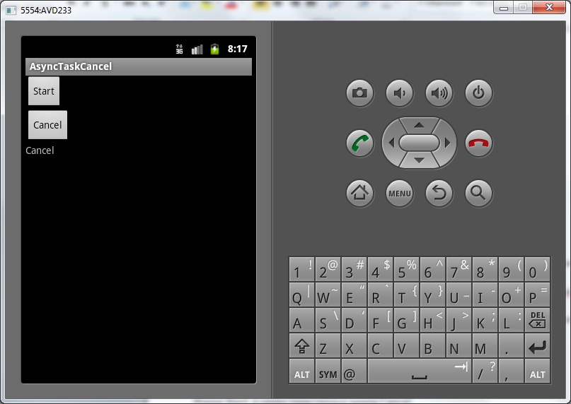

В этом уроке:
- отменяем задачу в процессе выполнения
Иногда возникает необходимость отменить уже выполняющуюся задачу. Для этого в AsyncTask есть метод cancel. Он на вход принимает boolean-параметр, который указывает, может ли система прервать выполнение потока.
Но вообще, рекомендуется не ждать, пока система завершит поток, а действовать самим. В doInBackground мы должны периодически вызывать метод isCancelled. Как только мы выполним метод cancel для AsyncTask, isCancelled будет возвращать true. А это значит, что мы должны завершить метод doInBackground.
Т.е. метод cancel – это мы ставим метку, что задачу надо отменить. Метод isCancelled – мы же сами эту метку читаем и предпринимаем действия, для завершения работы задачи.
Метод cancel возвращает boolean. Мы получим false, если задача уже завершена или отменена.
Рассмотрим на примере.
Создадим проект:
Project name: P0891_AsyncTaskCancel
Build Target: Android 4.0
Application name: AsyncTaskCancel
Package name: ru.startandroid.develop.p0891asynctaskcancel
Create Activity: MainActivity
strings.xml:
<?xml version="1.0" encoding="utf-8"?>
<resources>
<string name="app_name">AsyncTaskCancel</string>
<string name="start">Start</string>
<string name="cancel">Cancel</string>
</resources>main.xml:
<?xml version="1.0" encoding="utf-8"?>
<LinearLayout
xmlns:android="http://schemas.android.com/apk/res/android"
android:layout_width="fill_parent"
android:layout_height="fill_parent"
android:orientation="vertical">
<Button
android:id="@+id/btnStart"
android:layout_width="wrap_content"
android:layout_height="wrap_content"
android:onClick="onclick"
android:text="@string/start">
</Button>
<Button
android:id="@+id/btnCancel"
android:layout_width="wrap_content"
android:layout_height="wrap_content"
android:onClick="onclick"
android:text="@string/cancel">
</Button>
<TextView
android:id="@+id/tvInfo"
android:layout_width="wrap_content"
android:layout_height="wrap_content"
android:text="">
</TextView>
</LinearLayout>Кнопки старта и отмены задачи, и TextView для вывода текста.
MainActivity.java:
package ru.startandroid.develop.p0891asynctaskcancel;
import java.util.concurrent.TimeUnit;
import android.app.Activity;
import android.os.AsyncTask;
import android.os.Bundle;
import android.util.Log;
import android.view.View;
import android.widget.TextView;
public class MainActivity extends Activity {
final String LOG_TAG = "myLogs";
MyTask mt;
TextView tvInfo;
public void onCreate(Bundle savedInstanceState) {
super.onCreate(savedInstanceState);
setContentView(R.layout.main);
tvInfo = (TextView) findViewById(R.id.tvInfo);
}
public void onclick(View v) {
switch (v.getId()) {
case R.id.btnStart:
mt = new MyTask();
mt.execute();
break;
case R.id.btnCancel:
cancelTask();
break;
default:
break;
}
}
private void cancelTask() {
if (mt == null) return;
Log.d(LOG_TAG, "cancel result: " + mt.cancel(false));
}
class MyTask extends AsyncTask<Void, Void, Void> {
@Override
protected void onPreExecute() {
super.onPreExecute();
tvInfo.setText("Begin");
Log.d(LOG_TAG, "Begin");
}
@Override
protected Void doInBackground(Void... params) {
try {
for (int i = 0; i < 5; i++) {
TimeUnit.SECONDS.sleep(1);
Log.d(LOG_TAG, "isCancelled: " + isCancelled());
}
} catch (InterruptedException e) {
Log.d(LOG_TAG, "Interrupted");
e.printStackTrace();
}
return null;
}
@Override
protected void onPostExecute(Void result) {
super.onPostExecute(result);
tvInfo.setText("End");
Log.d(LOG_TAG, "End");
}
@Override
protected void onCancelled() {
super.onCancelled();
tvInfo.setText("Cancel");
Log.d(LOG_TAG, "Cancel");
}
}
}По нажатию кнопки Cancel выполняется метод cancelTask, в котором выполняем cancel (с параметром false) для AsyncTask.
В doInBackground в цикле гоняем паузы и выводим в лог результат метода isCancelled.
Метод onCancelled вызывается системой вместо onPostExecute, если задача была отменена.
Все сохраним и запустим приложение.

Жмем Start, а через пару секунд жмем Cancel.

Смотрим логи:
08:17:51.956: D/myLogs(487): Begin
08:17:52.993: D/myLogs(487): isCancelled: false
08:17:53.998: D/myLogs(487): isCancelled: false
08:17:54.543: D/myLogs(487): cancel result: true
08:17:54.552: D/myLogs(487): Cancel
08:17:55.042: D/myLogs(487): isCancelled: true
08:17:56.061: D/myLogs(487): isCancelled: true
08:17:57.111: D/myLogs(487): isCancelled: true
Мы видим, что в первых двух циклах задачи метод isCancelled возвращал false. Затем мы нажали Cancel (cancel result: true). Сразу же сработал метод onCancelled (Cancel). А метод doInBackground продолжил свою работу и докрутил цикл до конца. Но при этом метод onPostExecute, который обычно вызывается в конце задачи, не был вызван вообще, потому что мы отменили задачу (методом cancel).
Т.е. мы хоть cancel и выполнили, но задача продолжила работать. Завершать задачу надо нам самим. Для этого мы читаем isCancelled и, если он true, то завершаем метод doInBackground. Т.е. в нашем случае надо переписать метод doInBackground:
protected Void doInBackground(Void... params) {
try {
for (int i = 0; i < 5; i++) {
TimeUnit.SECONDS.sleep(1);
if (isCancelled()) return null;
Log.d(LOG_TAG, "isCancelled: " + isCancelled());
}
} catch (InterruptedException e) {
Log.d(LOG_TAG, "Interrupted");
e.printStackTrace();
}
return null;
}Мы просто добавили проверку isCancelled. Если он возвращает true, то выходим (return). Разумеется, в более сложных задачах может потребоваться более продуманная логика выхода.
Теперь если мы нажмем Cancel в процессе выполнения задачи, doInBackground остановит свою работу, как только сможет:
08:40:12.439: D/myLogs(440): Begin
08:40:13.498: D/myLogs(440): isCancelled: false
08:40:14.558: D/myLogs(440): isCancelled: false
08:40:15.118: D/myLogs(440): cancel result: true
08:40:15.138: D/myLogs(440): Cancel
Удалите или закомментируйте только что добавленную строку:
if (isCancelled()) return null;в методе doInBackground. Нам сейчас будет не нужна явная проверка отмены задачи. Мы проверим, что сделает метод cancel, если передать в него true.
Перепишем cancelTask():
private void cancelTask() {
if (mt == null) return;
Log.d(LOG_TAG, "cancel result: " + mt.cancel(true));
}В метод cancel передаем true. Т.е. он попытается сам остановить поток.
Сохраняем, запускаем приложение. Жмем Start, а через пару секунд жмем Cancel. Смотрим логи:
08:58:35.949: D/myLogs(545): Begin
08:58:37.023: D/myLogs(545): isCancelled: false
08:58:38.052: D/myLogs(545): isCancelled: false
08:58:38.688: D/myLogs(545): cancel result: true
08:58:38.698: D/myLogs(545): Interrupted
08:58:38.710: D/myLogs(545): Cancel
Мы видим, что метод doInBackground завершил работу, т.к. метод sleep сгенерировал InterruptedException (Interrupted). Т.е. когда используем sleep, остановка работы потока работает. Но не факт, что сработает в других случаях. Поэтому повторюсь: не надейтесь особо на cancel(true), а используйте проверку isCancelled или метод onCancelled для завершения своей задачи. Либо проверьте и убедитесь, что cancel(true) работает в ваших условиях.
Ну и для теста попробуйте нажать Cancel, когда задача уже завершена или отменена. В этом случае метод cancel вернет false.
Я тестировал это все на версии Android 4.0.